Xia Zhou
Associate Professor
Department of Computer Science,
Columbia University
I am an Associate Professor in the Department of Computer Science at Columbia University. I direct the Mobile X Lab. Before joining Columbia, I was the co-director of the Dartmouth Networking and Ubiquitous Systems (DartNets) Lab and the Dartmouth Reality and Robotics Lab (RLab) at Dartmouth College. I was also affiliated with the Augmented Health Lab. I received my PhD in Computer Science at UC Santa Barbara in June 2013, working under the supervision of Prof. Heather Zheng. I was a visiting faculty in National Taiwan University from December 2016 to February 2017, and in University of Cambridge from April 2017 to June 2017.
My research interest lies broadly in mobile computing and its intersection with other disciplines. Most of my current projects center on light—a ubiquitous medium around us. We explore a range of projects that turn light into a powerful medium for data communication and object/behavioral sensing. Check out our demo videos to learn more details. My PhD work designed network systems to handle the massive volume and unpredictable nature of today’s data traffic (see more in our MobiCom’08
Publications
-
 ThreadSense: Locating Touch on an Extremely Thin Interactive ThreadACM CHI Conference on Human Factors in Computing Systems (CHI), 2020.Pin-Sung Ku, Qijia Shao, Te-Yen Wu, Jun Gong, Ziyan Zhu, Xia Zhou, Xing-Dong Yang
ThreadSense: Locating Touch on an Extremely Thin Interactive ThreadACM CHI Conference on Human Factors in Computing Systems (CHI), 2020.Pin-Sung Ku, Qijia Shao, Te-Yen Wu, Jun Gong, Ziyan Zhu, Xia Zhou, Xing-Dong Yang -
 PolarTag: Invisible Data with Light PolarizationThe Workshop on Mobile Computing Systems and Applications (HotMobile), 2020. Best Demo AwardZhao Tian, Charles J. Carver, Qijia Shao, Monika Roznere, Alberto Quattrini Li, Xia Zhou
PolarTag: Invisible Data with Light PolarizationThe Workshop on Mobile Computing Systems and Applications (HotMobile), 2020. Best Demo AwardZhao Tian, Charles J. Carver, Qijia Shao, Monika Roznere, Alberto Quattrini Li, Xia Zhou -
 Overlapping Semantic Representations of Sign and Speech in Novice Sign Language LearnersProceedings of the 44th Annual Conference of the Cognitive Science Society (CogSci), 2022.Megan E. Hillis, Brianna Aubrey, Julien Blanchet, Qijia Shao, Xia Zhou, Devin Balkcom, David J. M. Kraemer
Overlapping Semantic Representations of Sign and Speech in Novice Sign Language LearnersProceedings of the 44th Annual Conference of the Cognitive Science Society (CogSci), 2022.Megan E. Hillis, Brianna Aubrey, Julien Blanchet, Qijia Shao, Xia Zhou, Devin Balkcom, David J. M. Kraemer -
 Sunflower: Locating Underwater Robots From the AirThe 20th ACM International Conference on Mobile Systems, Applications, and Services (MobiSys), 2022.Charles J. Carver, Qijia Shao, Samuel Lensgraf, Amy Sniffen, Maxine Perroni-Scharf, Hunter Gallant, Alberto Quattrini Li, Xia Zhou
Sunflower: Locating Underwater Robots From the AirThe 20th ACM International Conference on Mobile Systems, Applications, and Services (MobiSys), 2022.Charles J. Carver, Qijia Shao, Samuel Lensgraf, Amy Sniffen, Maxine Perroni-Scharf, Hunter Gallant, Alberto Quattrini Li, Xia Zhou -
 Air-Water Communication and Sensing with LightThe 14th International Conference on COMmunication Systems & NETworkS (COMSNETS), 2022. (Invited paper)Charles J. Carver, Zhao Tian, Qijia Shao, Hongyong Zhang, Kofi M. Odame, Alberto Quattrini Li, Xia Zhou
Air-Water Communication and Sensing with LightThe 14th International Conference on COMmunication Systems & NETworkS (COMSNETS), 2022. (Invited paper)Charles J. Carver, Zhao Tian, Qijia Shao, Hongyong Zhang, Kofi M. Odame, Alberto Quattrini Li, Xia Zhou -
 FaceSense: Sensing Face Touch with an Ear-worn SystemProceedings of the ACM on Interactive, Mobile, Wearable and Ubiquitous Technologies (IMWUT), Volume 5 Issue 3, 2021.Vimal Kakaraparthi, Qijia Shao, Charles J. Carver, Tien Pham, Nam Bui, Phuc Nguyen, Xia Zhou, Tam Vu
FaceSense: Sensing Face Touch with an Ear-worn SystemProceedings of the ACM on Interactive, Mobile, Wearable and Ubiquitous Technologies (IMWUT), Volume 5 Issue 3, 2021.Vimal Kakaraparthi, Qijia Shao, Charles J. Carver, Tien Pham, Nam Bui, Phuc Nguyen, Xia Zhou, Tam Vu -
 Teaching American Sign Language in Mixed RealityProceedings of the ACM on Interactive, Mobile, Wearable and Ubiquitous Technologies (IMWUT), Volume 4 Issue 4, 2020.Qijia Shao, Amy Sniffen, Julien Blanchet, Megan E. Hillis, Xinyu Shi, Themistoklis K. Haris, Jason Liu, Jason Lamberton, Melissa Malzkuhn, Lorna C. Quandt, James Mahoney, David J. M. Kraemer, Xia Zhou, Devin Balkcom
Teaching American Sign Language in Mixed RealityProceedings of the ACM on Interactive, Mobile, Wearable and Ubiquitous Technologies (IMWUT), Volume 4 Issue 4, 2020.Qijia Shao, Amy Sniffen, Julien Blanchet, Megan E. Hillis, Xinyu Shi, Themistoklis K. Haris, Jason Liu, Jason Lamberton, Melissa Malzkuhn, Lorna C. Quandt, James Mahoney, David J. M. Kraemer, Xia Zhou, Devin Balkcom -
 Noninvasive Glucose Monitoring Using Polarized LightACM Conference on Embedded Networked Sensor Systems (SenSys), 2020.Tianxing Li, Derek Bai, Temiloluwa Prioleau, Nam Bui, Tam Vu, Xia Zhou
Noninvasive Glucose Monitoring Using Polarized LightACM Conference on Embedded Networked Sensor Systems (SenSys), 2020.Tianxing Li, Derek Bai, Temiloluwa Prioleau, Nam Bui, Tam Vu, Xia Zhou -
 AmphiLight: Direct Air-Water Communication with Laser LightThe 17th USENIX Symposium on Networked Systems Design and Implementation (NSDI), 2020. Best Paper AwardCharles J. Carver, Zhao Tian, Hongyong Zhang, Kofi M. Odame, Alberto Quattrini Li, Xia Zhou
AmphiLight: Direct Air-Water Communication with Laser LightThe 17th USENIX Symposium on Networked Systems Design and Implementation (NSDI), 2020. Best Paper AwardCharles J. Carver, Zhao Tian, Hongyong Zhang, Kofi M. Odame, Alberto Quattrini Li, Xia Zhou -
 Longitudinal Analysis of a Campus Wi-Fi NetworkComputer Networks, Volume 170, April 2020, 107103.José Camacho, Chris McDonald, Ronald Peterson, Xia Zhou, David Kotz
Longitudinal Analysis of a Campus Wi-Fi NetworkComputer Networks, Volume 170, April 2020, 107103.José Camacho, Chris McDonald, Ronald Peterson, Xia Zhou, David Kotz -
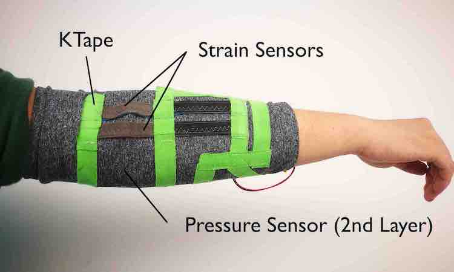Reconstructing Human Joint Motion with Computational FabricsProceedings of the ACM on Interactive, Mobile, Wearable and Ubiquitous Technologies(IMWUT), Vol. 3, No. 1, 2019.Ruibo Liu, Qijia Shao, Siqi Wang, Christina Ru, Devin Balkcom, Xia Zhou
-
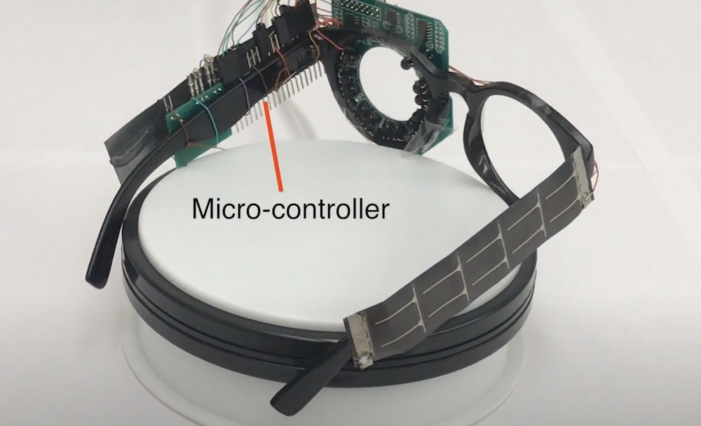Battery-Free Eye Tracker on GlassesACM Conference on Mobile Computing and Networking (MobiCom), 2018.Tianxing Li, Xia Zhou
-
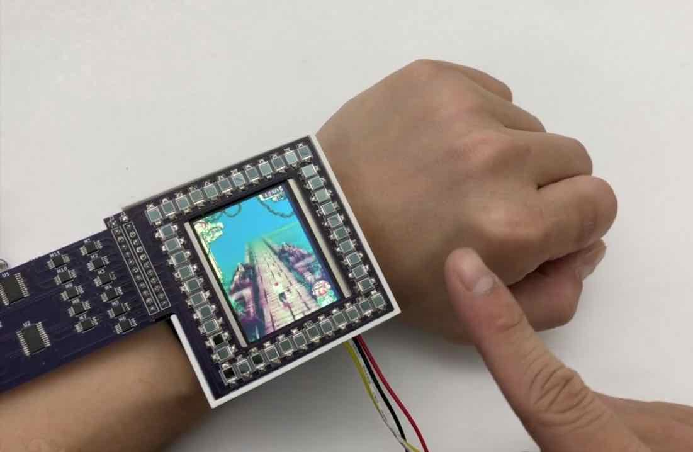Self-Powered Gesture Recognition with Ambient LightThe ACM Symposium on User Interface Software and Technology (UIST), 2018.Yichen Li, Tianxing Li, Ruchir A. Patel, Xingdong Yang, Xia Zhou
-
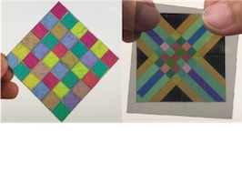Augmenting Indoor Inertial Tracking with Polarized LightACM International Conference on Mobile Systems, Applications, and Services (MobiSys), 2018.Zhao Tian, Yu-Lin Wei, Wei-Nin Chang, Xi Xiong, Changxi Zheng, Hsin-Mu Tsai, Kate Ching-Ju Lin, Xia Zhou
-
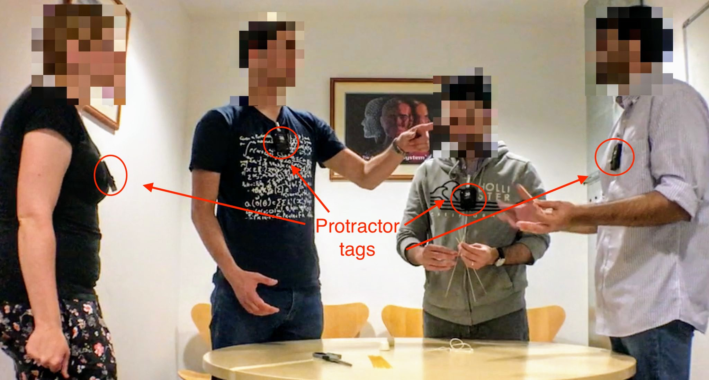Measuring Interaction Proxemics with Wearable Light TagsProceedings of the ACM on Interactive, Mobile, Wearable and Ubiquitous Technologies(IMWUT), Vol. 2, No. 1, 2018.Alessandro Montanari, Zhao Tian, Elena Francu, Benjamin Lucas, Brian Jones, Xia Zhou, Cecilia Mascolo
-
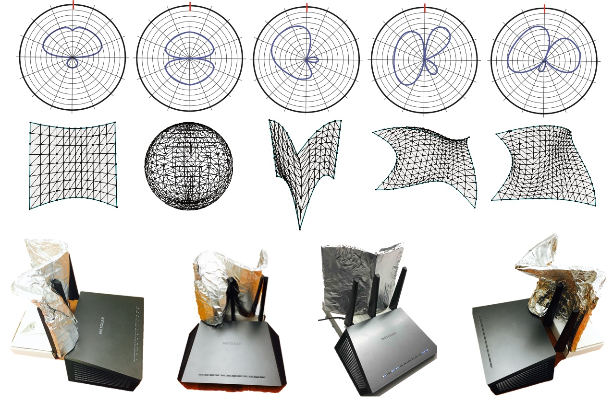Customizing Indoor Wireless Coverage via 3D-Fabricated ReflectorsACM International Conference on Systems for Energy-Efficient Built Environments (BuildSys), 2017Xi Xiong, Justin Chan, Ethan Yu, Nisha Kumari, Ardalan Amiri Sani, Changxi Zheng, Xia Zhou
-
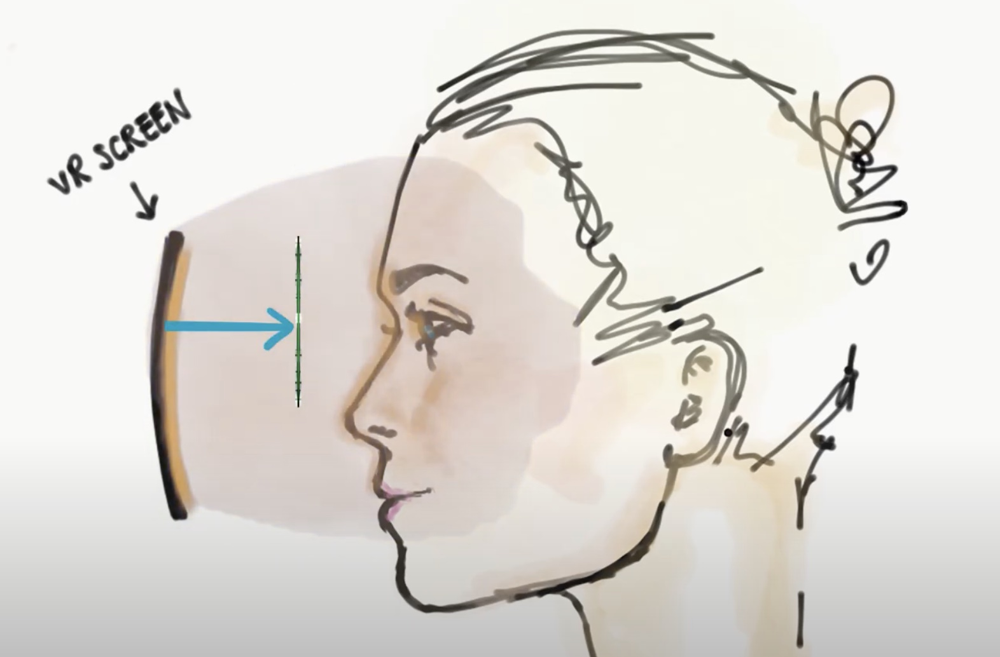Ultra-Low Power Gaze Tracking for Virtual RealityACM Conference on Embedded Networked Sensor Systems (SenSys), 2017. Best Paper Candidate. SIGMOBILE Research HighlightTianxing Li, Qiang Liu, Xia Zhou
-
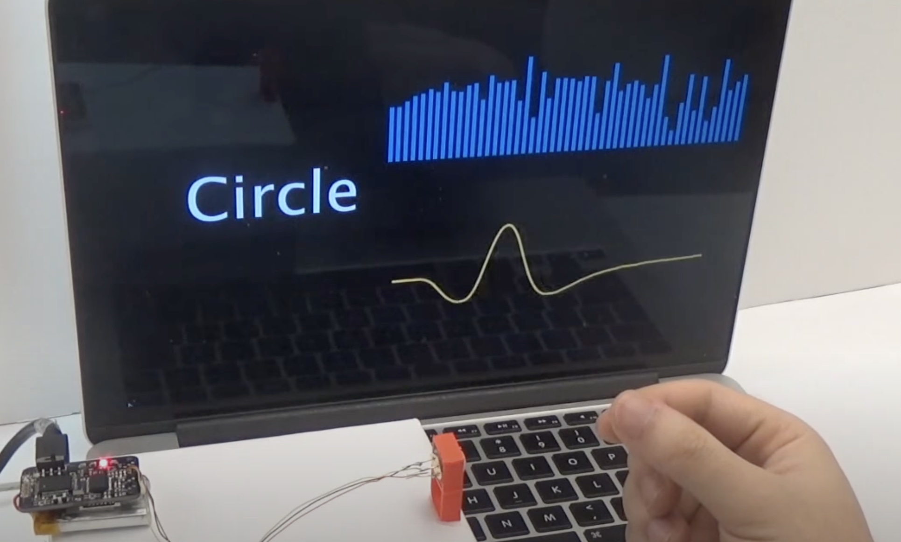Pyro: Thumb-Tip Gesture Recognition Using Pyroelectric Infrared Sensing.The ACM Symposium on User Interface Software and Technology (UIST), 2017.Jun Gong, Yang Zhang, Xia Zhou, Xing-Dong Yang.
-
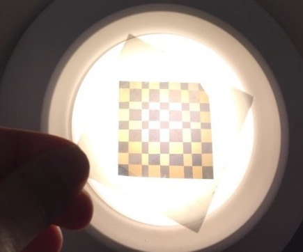Position: Augmenting Inertial Tracking with LightThe 4th ACM Workshop on Visible Light Communication Systems (VLCS), 2017.Zhao Tian, Yu-Lin Wei, Xi Xiong, Wei-Nin Chang, Hsin-Mu Tsai, Kate Ching-Ju Lin, Changxi Zheng, Xia Zhou
-
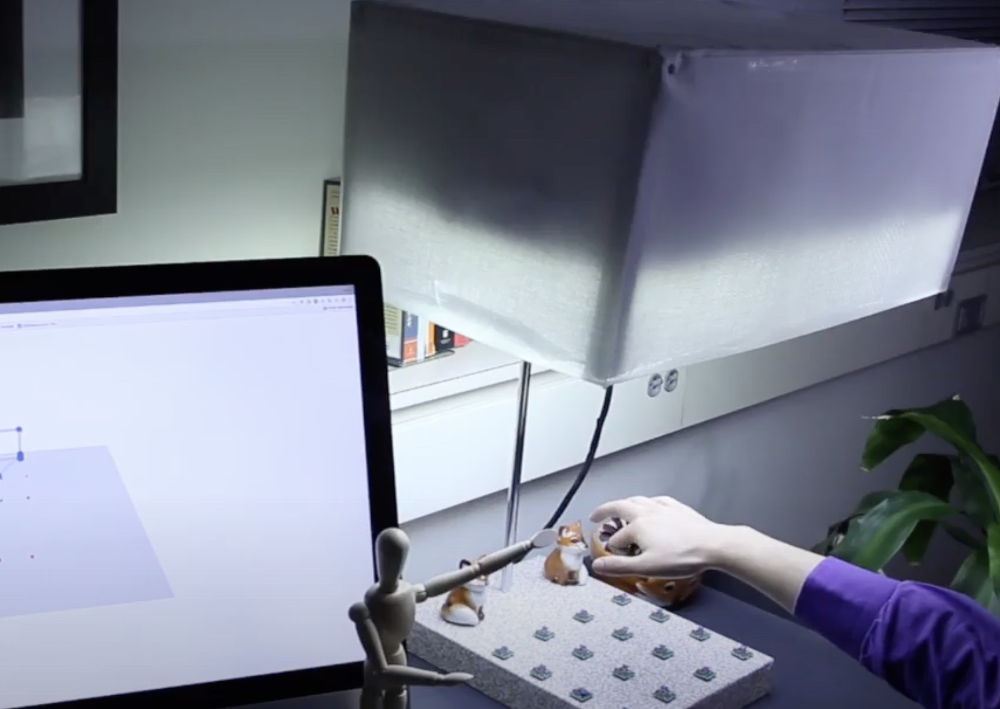Reconstructing Hand Poses Using Visible LightProceedings of the ACM on Interactive, Mobile, Wearable and Ubiquitous Technologies(IMWUT), vol. 1, no. 3, 2017.Tianxing Li, Xi Xiong, Yifei Xie, George Hito, Xing-Dong Yang, Xia Zhou
-
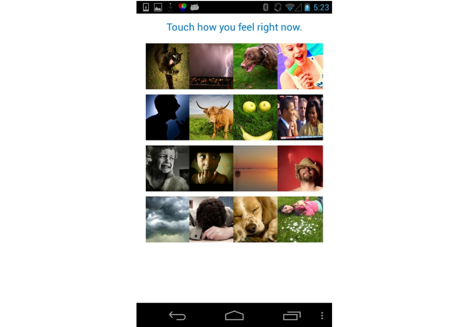StudentLife: assessing mental health, academic performance and behavioral trends of college students using smartphonesMobile Health, pp. 7-33. Springer, Cham, 2017Rui Wang, Fanglin Chen, Zhenyu Chen, Tianxing Li, Gabriella Harari, Stefanie Tignor, Xia Zhou, Dror Ben-Zeev, and Andrew T. Campbell
-
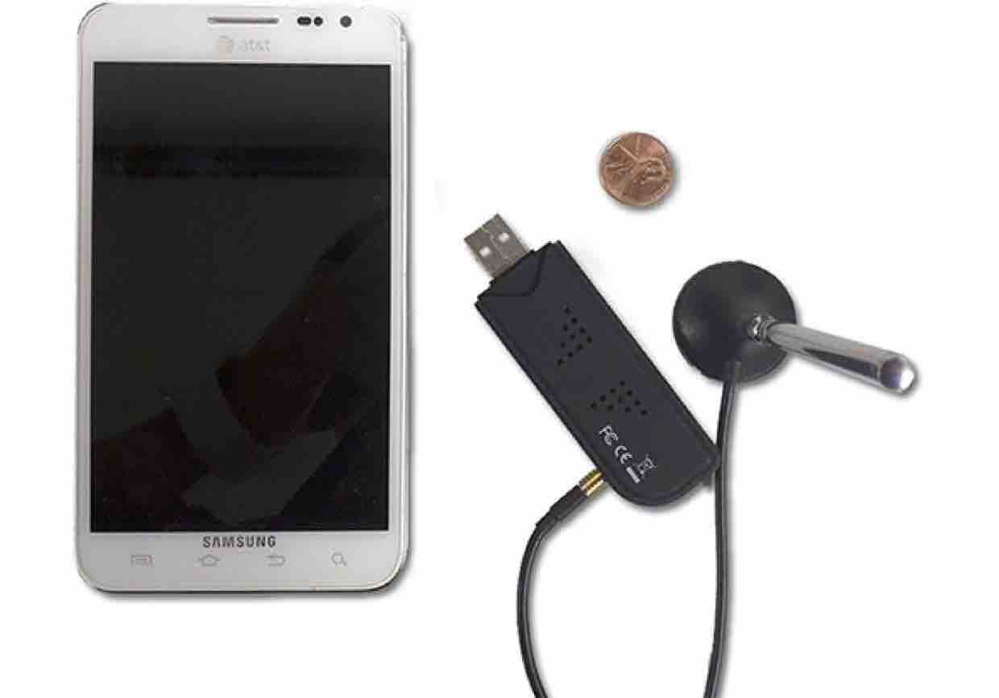Empirical Validation of Commodity Spectrum MonitoringACM Conference on Embedded Networked Sensor Systems (SenSys), 2016.Ana Nika, Zhijing Li, Yanzi Zhu, Yibo Zhu, Ben Y. Zhao, Xia Zhou, and Haitao Zheng
-
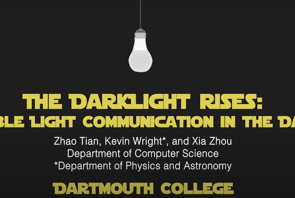The DarkLight Rises: Visible Light Communication in the DarkACM Conference on Mobile Computing and Networking (MobiCom), 2016. Best Video AwardZhao Tian, Kevin Wright, Xia Zhou
-
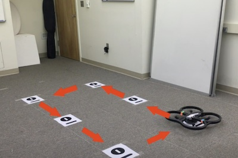Automating 3D Wireless Measurements with DronesACM International Workshop on Wireless Network Testbeds, Experimental evaluation & Characterization (WiNTECH), 2016.Ethan Yu, Xi Xiong, Xia Zhou
-
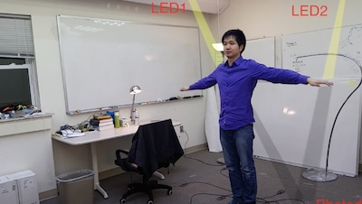Practical Human Sensing in the LightACM International Conference on Mobile Systems, Applications, and Services (MobiSys), 2016. SIGMobile Research HighlightsTianxing Li, Qiang Liu, Xia Zhou
-
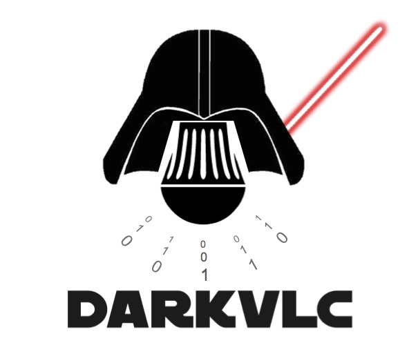Lighting Up the Internet of Things with DarkVLCInternational Workshop on Mobile Computing Systems and Applications (ACM HotMobile), 2016.Zhao Tian, Kevin Wright, Xia Zhou
-
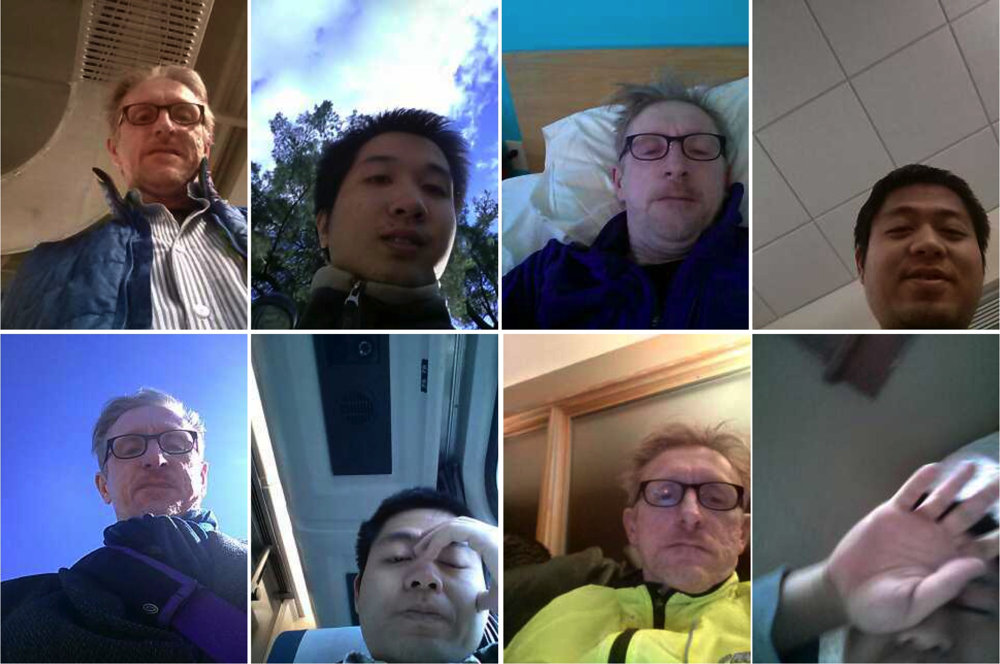Using opportunistic face logging from smartphone to infer mental health: challenges and future directionsThe International Workshop on Mobile Systems for Computational Social Science (MCSS), 2015Rui Wang, Xia Zhou, Andrew T. Campbell
-
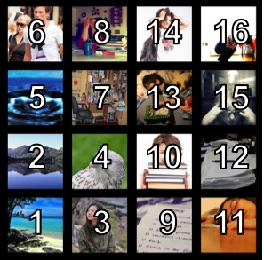The Mobile Photographic Stress Meter (MPSM): A New Way to Measure Stress Using ImagesThe International Workshop on Mobile Systems for Computational Social Science (MCSS), 2015.Sophia Haim, Rui Wang, Lorie Loeb, Xia Zhou, Andrew T. Campbell.
-
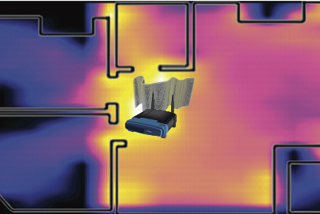3D Printing Your Wireless CoverageACM Workshop on Hot Topics in Wireless (HotWireless), 2015 Hot Paper AwardJustin Chan, Changxi Zheng, Xia Zhou
-
Visible Light Knows Who You AreACM Workshop on Visible Light Communication Systems (VLCS), 2015Tianxing Li, Chuankai An, Zhao Tian, Andrew T. Campbell, Xia Zhou
-
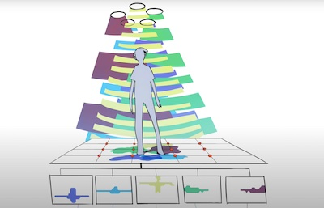Human Sensing Using Visible Light CommunicationACM Conference on Mobile Computing and Networking (MobiCom), 2015 Best Video AwardTianxing Li, Chuankai An, Zhao Tian, Andrew T. Campbell, Xia Zhou
-
SmartGPA: How Smartphones Can Assess and Predict Academic Performance of College StudentsACM International Joint Conference on Pervasive and Ubiquitous Computing (UbiComp), 2015 Honorable Mention AwardRui Wang, Peilin Hao, Gabriella Harari, Xia Zhou, Andrew T. Campbell
-
Low-Power Pervasive Wi-Fi Connectivity Using WiScanACM International Joint Conference on Pervasive and Ubiquitous Computing (UbiComp), 2015Tianxing Li, Chuankai An, Ranveer Chandra, Andrew T. Campbell, Xia Zhou
-
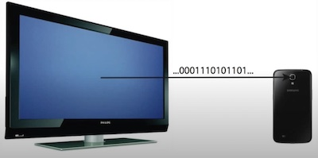Real-Time Screen-Camera Communication Behind Any SceneACM International Conference on Mobile Systems, Applications, and Services (MobiSys), 2015 Best Demo AwardTianxing Li, Chuankai An, Xinran Xiao, Andrew T. Campbell, Xia Zhou
-
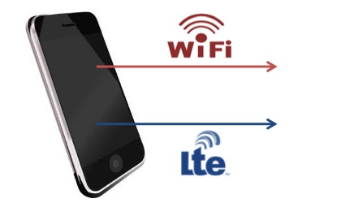Energy and Performance of Smartphone Radio Bundling in Outdoor EnvironmentsThe International World Wide Web Conference (WWW), 2015Ana Nika, Yibo Zhu, Ning Ding, Abhilash Jindal, Y. Charlie Hu, Xia Zhou, Ben Y. Zhao, Haitao Zheng
-
Visible Light Networking and SensingACM Workshop on Hot Topics in Wireless (HotWireless), 2014Xia Zhou, Andrew T. Campbell
-
 StudentLife: assessing mental health, academic performance and behavioral trends of college students using smartphonesACM International Joint Conference on Pervasive and Ubiquitous Computing (UbiComp), 2014 Best Paper NomineeRui Wang, Fanglin Chen, Zhenyu Chen, Tianxing Li, Gabriella Harari, Stefanie Tignor, Xia Zhou, Dror Ben-Zeev, Andrew T. Campbell
StudentLife: assessing mental health, academic performance and behavioral trends of college students using smartphonesACM International Joint Conference on Pervasive and Ubiquitous Computing (UbiComp), 2014 Best Paper NomineeRui Wang, Fanglin Chen, Zhenyu Chen, Tianxing Li, Gabriella Harari, Stefanie Tignor, Xia Zhou, Dror Ben-Zeev, Andrew T. Campbell -
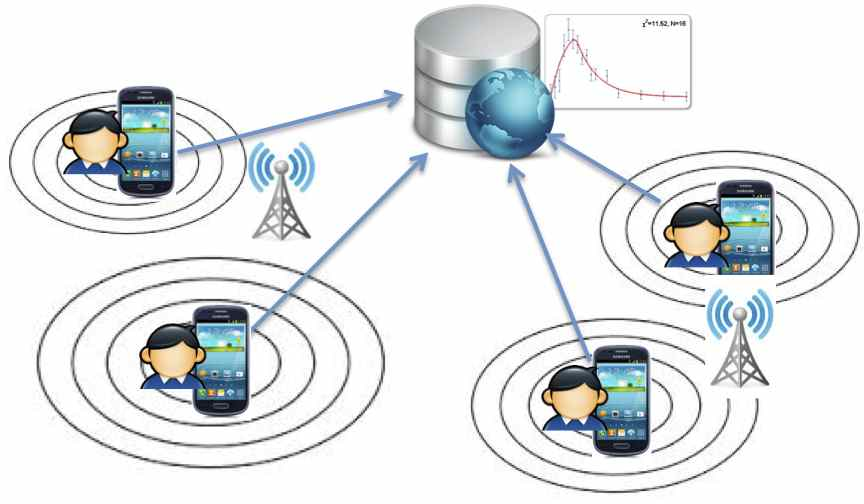Towards Commoditized Real-time Spectrum MonitoringACM Workshop on Hot Topics in Wireless (HotWireless), 2014Ana Nika, Zengbin Zhang, Xia Zhou, Ben Y. Zhao, and Haitao Zheng
-
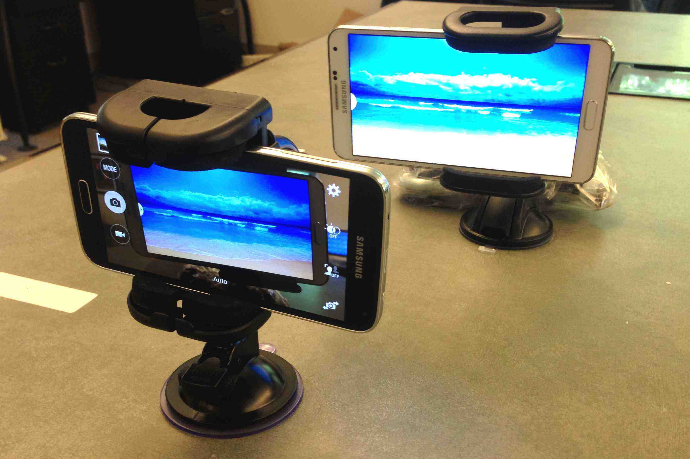HiLight: Hiding Bits in Pixel Translucency ChangesACM Workshop on Visible Light Communication Systems (VLCS), 2014 Best Paper AwardTianxing Li, Chuankai An, Andrew T. Campbell, Xia Zhou
-
 Cutting the Cord: a Robust Wireless Facilities Network for Data CentersACM Conference on Mobile Computing and Networking (MobiCom), 2014Yibo Zhu, Xia Zhou, Zengbin Zhang, Lin Zhou, Amin Vahdat, Ben Y. Zhao, Haitao Zheng
Cutting the Cord: a Robust Wireless Facilities Network for Data CentersACM Conference on Mobile Computing and Networking (MobiCom), 2014Yibo Zhu, Xia Zhou, Zengbin Zhang, Lin Zhou, Amin Vahdat, Ben Y. Zhao, Haitao Zheng -
My Smartphone Knows I am HungryACM Workshop on Physical Analytics, 2014Fanglin Chen, Rui Wang, Xia Zhou, Andrew T. Campbell.
-
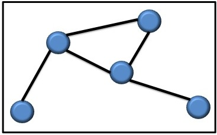Practical Conflict Graphs in the WildIEEE/ACM Transactions on Networking (ToN), 2014Xia Zhou, Zengbin Zhang, Gang Wang, Xiaoxiao Yu, Ben Y. Zhao, Haitao Zheng
-
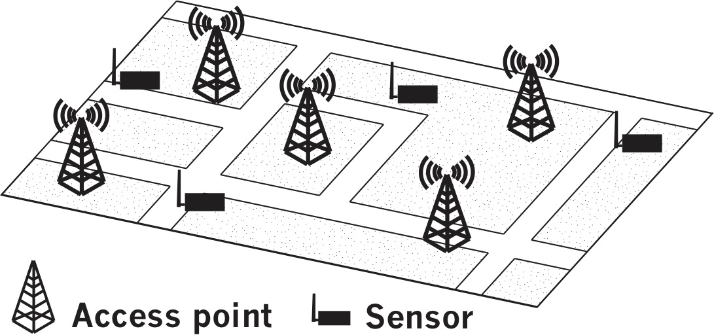Practical Conflict Graphs for Dynamic Spectrum DistributionACM Annual Conference of Special Interest Group on Performance Evaluation (SIGMETRICS), 2013 Best Practical Paper AwardXia Zhou, Zengbin Zhang, Gang Wang, Xiaoxiao Yu, Ben Y. Zhao, Haitao Zheng
-
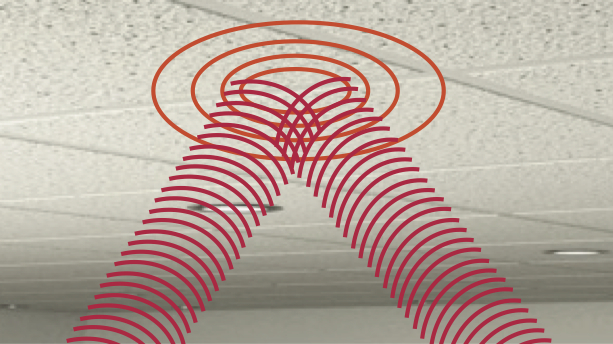Mirror Mirror on the Ceiling: Flexible Wireless Links for Data CentersACM Annual Conference of the Special Interest Group on Data Communication (SIGCOMM), 2012Xia Zhou, Zengbin Zhang, Yibo Zhu, Yubo Li, Saipriya Kumar, Amin Vahdat, Ben Y. Zhao, Haitao Zheng
-
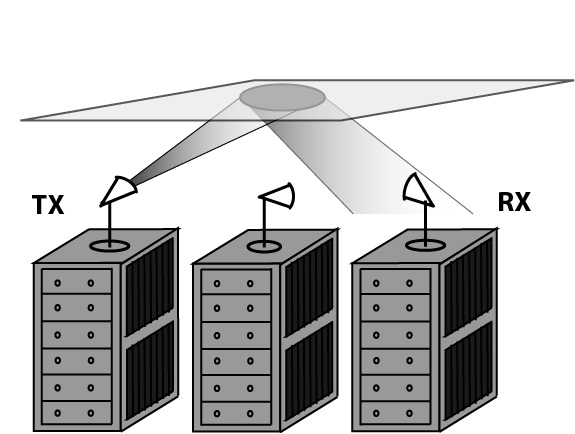3D Beamforming for Wireless Data CentersACM Workshop on Hot Topics in Networks (HotNets), 2011Weile Zhang, Xia Zhou, Lei Yang, Zengbin Zhang, Ben Y. Zhao, Haitao Zheng
-
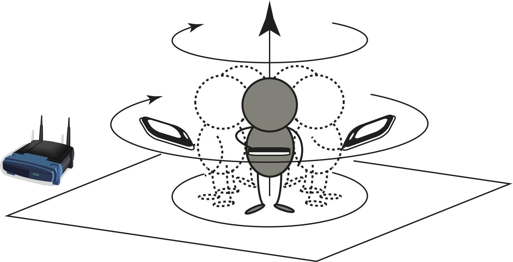I Am the Antenna: Accurate Outdoor AP Location Using SmartphonesACM Conference on Mobile Computing and Networking (MobiCom), 2011Zengbin Zhang, Xia Zhou, Weile Zhang, Yuanyang Zhang, Gang Wang, Ben Y. Zhao, Haitao Zheng
-
On the Stability and Optimality of Universal SwarmsACM Annual Conference of Special Interest Group on Performance Evaluation (SIGMETRICS), 2011Weile Zhang, Xia Zhou, Lei Yang, Zengbin Zhang, Ben Y. Zhao, Haitao Zheng
-
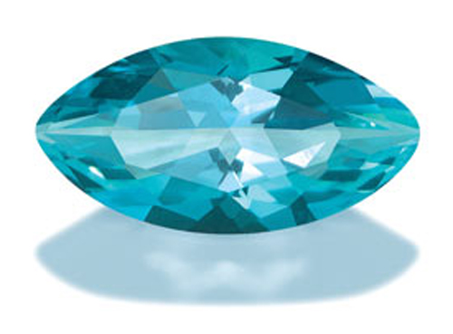To Preempt or Not: Tackling Bid and Time-based Cheating in Online Spectrum AuctionsIEEE Conference on Computer Communications (INFOCOM), 2011Lara Deek, Xia Zhou, Kevin Almeroth, Haitao Zheng
-
Breaking Bidder Collusion in Large-Scale Spectrum AuctionsACM Symposium on Mobile Ad Hoc Networking and Computing (MobiHoc), 2010Xia Zhou, Haitao Zheng
-
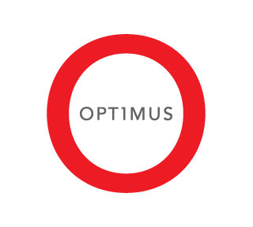Optimus: SINR-driven Spectrum Distribution via Constraint TransformationSymposium on New Frontiers in Dynamic Spectrum Access Networks (DySPAN), 2010Lili Cao, Lei Yang, Xia Zhou, Zengbin Zhang, Haitao Zheng
-
 Auction-based Spectrum Markets in Cognitive Radio NetworksBook chapter in Cognitive Radio Communications and Networks, Academic Press, 2009Xia Zhou, Heather Zheng, Maziar Nekovee, Milind M. Buddhikot.
Auction-based Spectrum Markets in Cognitive Radio NetworksBook chapter in Cognitive Radio Communications and Networks, Academic Press, 2009Xia Zhou, Heather Zheng, Maziar Nekovee, Milind M. Buddhikot. -
TRUST: A General Framework for Truthful Double Spectrum AuctionsIEEE Conference on Computer Communications (INFOCOM), 2009Xia Zhou, Haitao Zheng
-
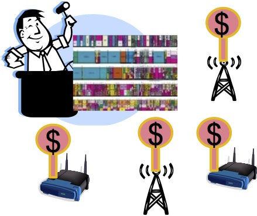eBay in the Sky: Strategy-Proof Wireless Spectrum AuctionsACM Conference on Mobile Computing and Networking (MobiCom), 2008 Best Paper Award FinalistXia Zhou, Sorabh Gandhi, Subhash Suri, Haitao Zheng
-
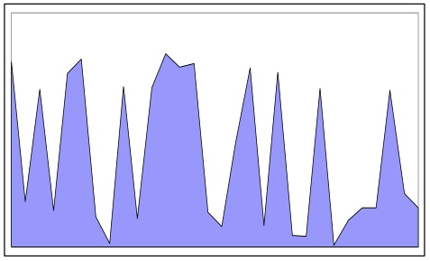Traffic-Driven Dynamic Spectrum AuctionsWorkshop on Networking Technologies for Software Defined Radio (SDR), 2008Xia Zhou, Shravan Mettu, Haitao Zheng, Elizabeth M. Belding
-
 Correlation based Rate Adaptation via Insights from Incomplete Observations in 802.11 NetworksInternational Conference on Communications (ICC), 2007Xia Zhou, Jun Zhao, Guanghua Yang
Correlation based Rate Adaptation via Insights from Incomplete Observations in 802.11 NetworksInternational Conference on Communications (ICC), 2007Xia Zhou, Jun Zhao, Guanghua Yang